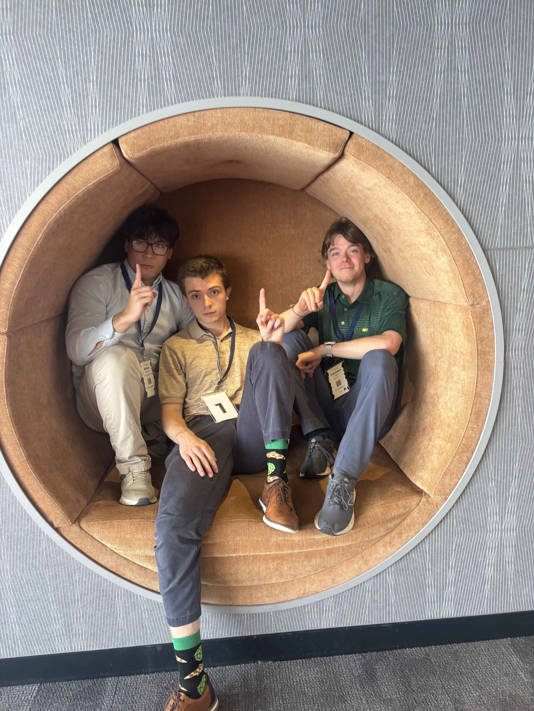

ACCOUNTING • CAREER DEVELOPMENT • NETWORKING
University at Buffalo Accounting Association
A community of accounting students at UB.

About the Club
The UBAA hosts activities and events that develop networking, communication, and teamwork skills and provide insight into all career paths available in the accounting field. Through mentorship opportunities, technical presentations, and community and social events, members can improve their skills in enjoyable and creative ways.
UBAA is affiliated with the Institute of Internal Auditors, which helps broaden student knowledge and provides members with personal and professional development opportunities through education, association with area business professionals, and professional certification in internal auditing.
My Role
Here I can specifically discuss what I contributed to the project, what responsibilities I took on, and any problems that I helped solve.

What I Learned
Here I can talk about what I learned from the experience, including technical skills, teamwork, communication, or problem solving.